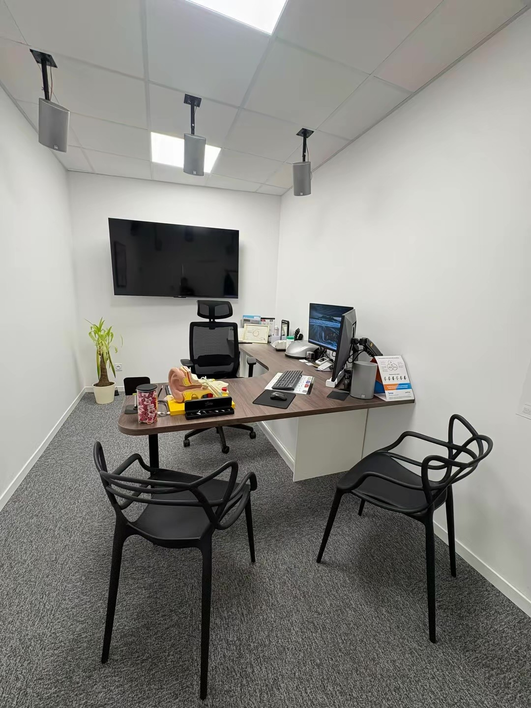
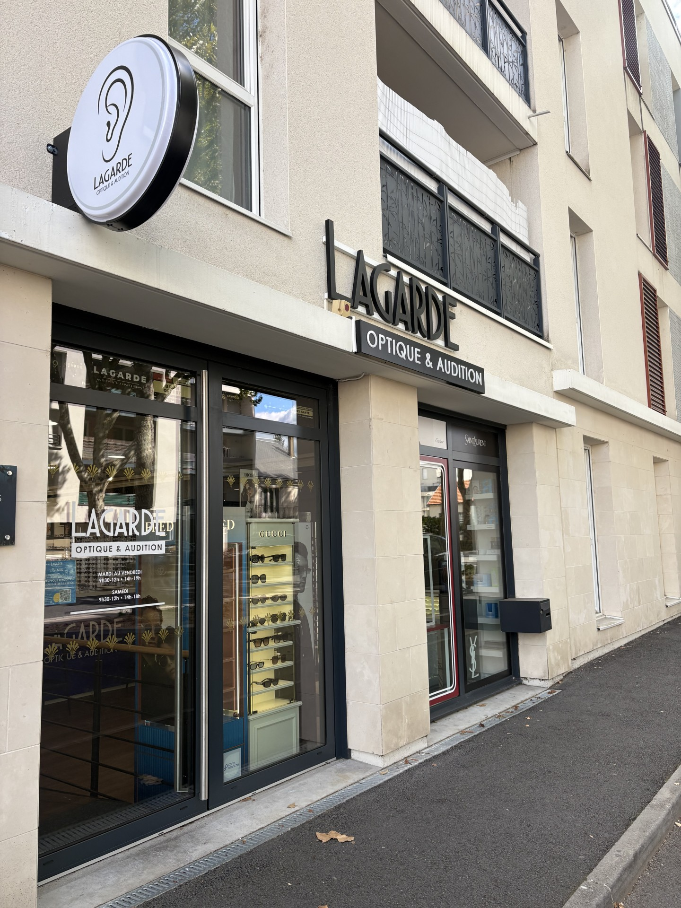

Local
Notre cabinet est situé en plein cœur de Joué-lès-Tours, au 82 bis boulevard Jean Jaurès, dans les locaux de Lagarde Optique & Audition.
LE CABINET
Lagarde Audition vous accueille dans le même établissement que Lagarde Optique, à Joué-lès-Tours.
UN ACCUEIL DE PROXIMITÉ
Nous prenons le temps de vous accompagner et de répondre à vos questions, dans un espace dédié à l'audition.
Notre cabinet est installé au sein de Lagarde Optique & Audition.

AU CŒUR DE JOUÉ-LÈS-TOURS
Notre cabinet est situé en plein cœur de Joué-lès-Tours, au 82 bis boulevard Jean Jaurès, dans les locaux de Lagarde Optique & Audition.
Le cabinet est accessible grâce au réseau de bus et de tramway de la métropole de Tours. Retrouvez notre adresse et l’itinéraire juste ci-dessous.
NOTRE ENGAGEMENT
Deux expertises, une même attention.
Lagarde Optique & Audition réunit deux métiers complémentaires, l’optique et l’audition, au cœur de Joué-lès-Tours.
Cette association repose sur une ambition commune : offrir à chacun un accompagnement de proximité, fondé sur l’écoute, le conseil et la confiance.
Chez Lagarde Audition, nous prenons le temps de comprendre vos besoins et votre quotidien pour vous proposer des solutions auditives adaptées, dans un environnement accueillant et professionnel.
Notre engagement est simple : vous accompagner avec attention, du premier échange au suivi de vos aides auditives.
NOUS TROUVER
Reconnaissez facilement notre entrée grâce à la photo de la devanture.

82 bis boulevard Jean Jaurès
37300 Joué-lès-Tours